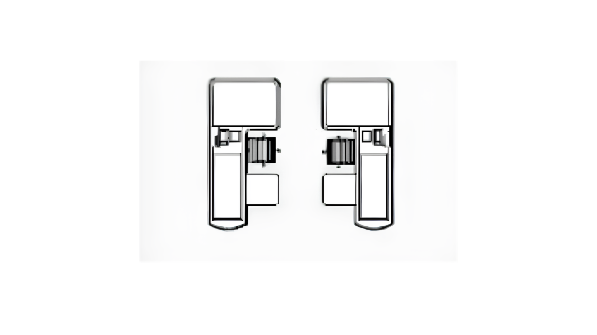
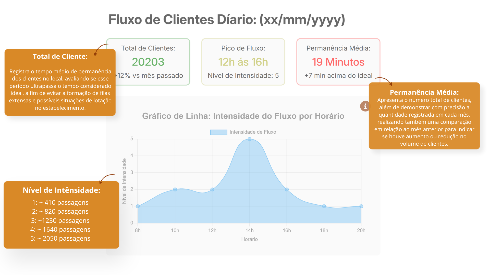
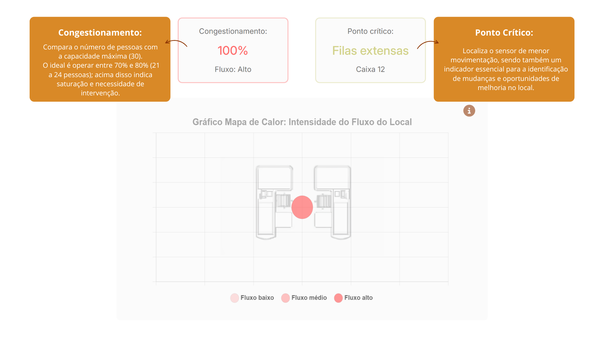

Fluxo de Clientes Díario: (05/05/2026)
Local: Caixa 01
Média de fluxo:
43%
+12% vs o dia anterior
Pico de Fluxo:
12h ás 16h
Nível de Intensidade: 5
Permanência Média:
10 Minutos
+8 min acima do ideal
Congestionamento:
100%
Fluxo: Alto
Ponto crítico:
Filas extensas
Caixa 12

Gráfico de Linha: Descrição

Gráfico de Mapa de Calor: Descrição
